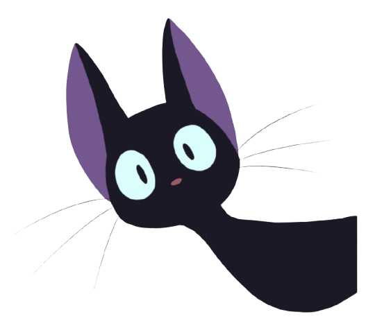

Traga mais magia pro seu dia com o Café Jiji!
Uma cafeteria inspirada no encanto do Studio Ghibli. O lugar perfeito para apreciar um bom café na melhor companhia felina.
CONHEÇA PESSOALMENTE


O Café Jiji nasceu de uma paixão que cruza oceanos. Nosso nome é uma homenagem ao charmoso e tagarela gatinho preto de Kiki's Delivery Service (O Serviço de Entregas da Kiki), um dos clássicos mais amados do Studio Ghibli. Assim como no Japão, onde os cat cafés se espalharam pelas metrópoles como verdadeiros refúgios de paz e fofura no meio da rotina agitada, nós queremos ser o seu momento de pausa e magia no dia a dia.
Mais do que saborear um bom café, a nossa proposta é trazer um pedacinho dessa cultura japonesa de acolhimento, unindo o aconchego de uma boa xícara com o carinho e a energia única dos felinos. Aqui, cada ronrono acompanha o seu café.
No Brasil, essa experiência ainda é uma novidade encantadora e cheia de propósito. Todos os gatinhos que você vai conhecer no Café Jiji pertencem a ONGs parceiras e estão à procura de um lar. Quem sabe, além de tomar um café, você não encontra o seu próprio companheiro mágico para levar para casa?

Assim como os famosos cat cafés do Japão, nosso espaço foi planejado para ser um refúgio de paz. Para o conforto de todos, no Café Jiji os ambientes da cafeteria e o dos felinos são 100% separados, respeitando rigorosamente todas as normas de higiene e garantindo o bem-estar dos gatinhos.
Antes de entrar no nosso Gatil, é fundamental conhecermos algumas regras básicas de convivência. Clique aqui para conhecer as regras.
R$ 15,00 / por pessoa
Acesso por ordem de chegada (não realizamos agendamentos).
15 minutos
Aproveite cada segundo com nossos gatinhos! Como a entrada é por ordem de chegada, se você quiser saborear nosso cardápio antes de entrar no gatil, basta passar primeiro pelas mesas da cafeteria.
Confira alguns dos gatinhos incríveis que encheram nossa casa de amor e hoje espalham carinho em seus novos lares.